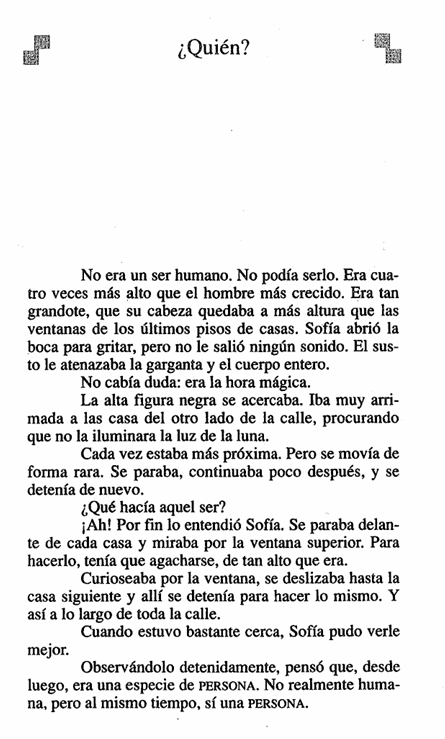
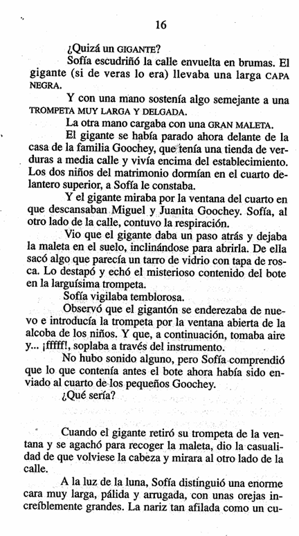
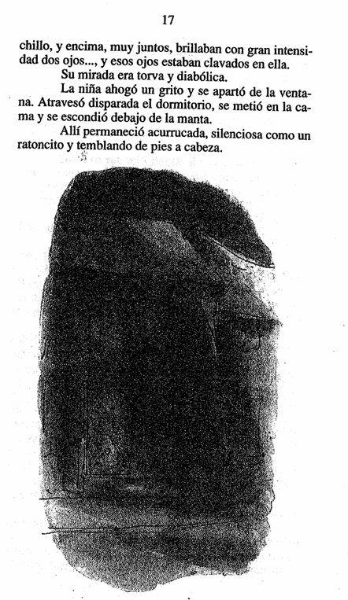

"La hora mágica" — Fragmento inicial (capítulo con el personaje Sofía)
📖 Instrucciones: Lee con atención el fragmento antes de responder. Haz clic en la alternativa que consideres correcta: se marcará en verde si acertaste o en rojo si fallaste (y se mostrará cuál era la correcta).
📄 Páginas del texto

📷 Aquí va la imagen de la página 1 (reemplaza "pagina1.png" por tu archivo)
Página 15

📷 Aquí va la imagen de la página 2 (reemplaza "pagina2.png" por tu archivo)
Página 16

📷 Aquí va la imagen de la página 2 (reemplaza "pagina2.png" por tu archivo)
Página 17
🔍 Comprensión y Análisis
Pregunta 6Comprensión literal
Cuando Sofía ve por primera vez la enorme figura, quiere gritar pero no puede. ¿Qué se lo impide?
A) El sueño todavía la tenía adormecida.
B) El susto le oprimía la garganta y todo el cuerpo, y no le salía ningún sonido.
C) Se tapó la boca con las manos para no hacer ruido.
D) No quería despertar a las demás niñas del internado.
Alternativa B. El relato indica que el susto le atenazaba la garganta y el cuerpo entero, por lo que, aunque abrió la boca, no logró emitir sonido alguno.
Pregunta 7Inferencia
La figura se detiene frente a cada casa y se agacha para mirar por las ventanas de los pisos superiores. Según esto, ¿qué se puede inferir que está haciendo?
A) Busca algo para robar en cada vivienda.
B) Va revisando cuáles habitaciones pertenecen a niños dormidos.
C) Está perdido y busca una dirección concreta.
D) Cuenta el número de casas que hay en la calle.
Alternativa B. Se detiene justo frente al cuarto donde duermen Miguel y Juanita Goochey y observa por esa ventana en particular, lo que sugiere que busca específicamente habitaciones de niños.
Pregunta 8Comprensión literal
¿Qué hace el gigante con el misterioso contenido que saca de un tarro dentro de su maleta?
A) Lo guarda nuevamente sin usarlo.
B) Lo derrama sobre la calle.
C) Lo vierte dentro de su larga trompeta y lo sopla hacia la ventana del cuarto de los niños.
D) Se lo entrega a los padres de los niños.
Alternativa C. El gigante destapa el tarro, echa su contenido en la trompeta, la introduce por la ventana abierta y sopla, aunque no se escucha ningún sonido.
Pregunta 9Análisis narrativo
Justo cuando recoge la maleta del suelo, el gigante vuelve la cabeza y mira hacia el otro lado de la calle, donde está Sofía. ¿Qué efecto produce este giro en la tensión de la historia?
A) Resuelve de inmediato todo el misterio del relato.
B) Genera un momento de máximo suspenso, pues existe el riesgo de que Sofía sea descubierta espiando.
C) No aporta ninguna tensión, es un detalle sin importancia.
D) Demuestra que el gigante ya sabía que Sofía estaba ahí desde el principio.
Alternativa B. El giro inesperado de la cabeza del gigante justo hacia donde observa Sofía crea un instante de gran tensión, pues el lector no sabe si ella será vista.
Pregunta 10Análisis del personaje
Al ver de cerca, a la luz de la luna, el rostro del gigante y notar que sus ojos están clavados en ella, ¿cómo reacciona Sofía?
A) Se queda inmóvil observándolo con curiosidad.
B) Ahoga un grito, se aparta de la ventana y corre a esconderse temblando debajo de la manta.
C) Sale corriendo del dormitorio a pedir ayuda a un adulto.
D) Le hace una seña con la mano al gigante.
Alternativa B. Sofía se asusta muchísimo, atraviesa el dormitorio corriendo, se mete en la cama y permanece acurrucada y temblando de pies a cabeza.
📚 Vocabulario en contexto
Vocabulario 1
En el texto se dice que el rayo de luna "asomaba al sesgo" por entre las cortinas. ¿Qué significa "al sesgo" en este contexto?
A) De forma oblicua o inclinada.
B) Con mucha fuerza y velocidad.
C) De manera intermitente, como parpadeando.
D) Completamente vertical.
Alternativa A. "Al sesgo" significa en diagonal o de forma inclinada, describiendo cómo entraba la luz por la ventana.
Vocabulario 2
Sofía se acerca a la ventana "de puntillas". ¿Qué significa esta expresión?
A) Corriendo rápidamente y sin cuidado.
B) Caminando sobre la punta de los pies para no hacer ruido.
C) Gateando por el suelo.
D) Dando saltos pequeños de alegría.
Alternativa B. "Andar de puntillas" significa caminar apoyando solo la punta de los pies, generalmente para moverse en silencio y no ser descubierto.
Vocabulario 3
Se dice que Sofía "escudriñó" la calle envuelta en brumas. ¿Qué significa este verbo?
A) Observar con mucha atención y detalle, tratando de descubrir algo.
B) Ignorar por completo lo que se tiene enfrente.
C) Recordar algo con nostalgia.
D) Caminar muy rápido de un lugar a otro.
Alternativa A. "Escudriñar" significa examinar o mirar algo con mucho cuidado y minuciosidad para descubrir detalles ocultos.
Vocabulario 4
La mirada del gigante se describe como "torva y diabólica". ¿Qué significa "torva" en este contexto?
A) Alegre y amistosa.
B) Amenazante, fiera o de aspecto siniestro.
C) Distraída, como si mirara sin ver.
D) Llorosa y triste.
Alternativa B. "Torva" describe una mirada fiera, amenazante o de aspecto intimidante, coherente con el terror que siente Sofía en ese momento.
✍️ Preguntas de Interpretación y Reflexión
Al imprimir o exportar a PDF, solo se incluirá esta sección y las líneas quedarán en blanco.
Nombre:
Fecha:
Pregunta 3Interpretación y pensamiento crítico
El gigante vierte un misterioso contenido en su trompeta y lo sopla, sin hacer ruido, hacia la ventana
del cuarto donde duermen Miguel y Juanita. Sofía no logra saber qué era eso que envió a la habitación.
Considerando las pistas de la escena (la hora de la noche, que los niños dormían, la forma silenciosa
de actuar del gigante), ¿qué crees tú que podría contener ese tarro? Explica tu respuesta apoyándote
en algún detalle del texto.
Creo que podría tratarse de algo relacionado con
los sueños, porque el gigante actúa de noche, junto a
la ventana de niños dormidos, y sopla en silencio.
⚠️ El texto azul de arriba es solo un ejemplo de cómo se ve una respuesta completa. Tu respuesta
NO puede ser igual ni copiar esas frases: debes escribirla con tus propias palabras.
Pregunta 4Interpretación y pensamiento crítico
Al final del fragmento, el gigante voltea la cabeza y sus ojos quedan fijos en Sofía, quien se asusta
muchísimo y corre a esconderse bajo la manta. Si tú hubieras estado observando por esa ventana en ese
instante, ¿qué habrías hecho? Fundamenta tu respuesta usando algún detalle del ambiente o de la escena
que leíste en el texto.
Yo también me habría alejado de inmediato de la
ventana, porque esa mirada tan fija y siniestra da
mucho miedo, y me habría escondido como Sofía.
⚠️ El texto azul de arriba es solo un ejemplo de cómo se ve una respuesta completa. Tu respuesta
NO puede ser igual ni copiar esas frases: debes escribirla con tus propias palabras.